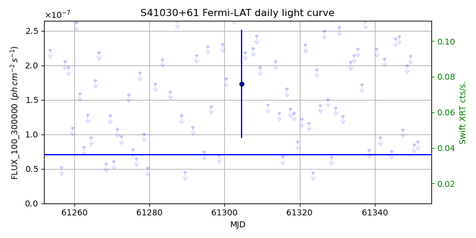
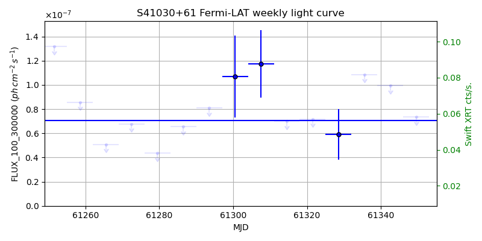
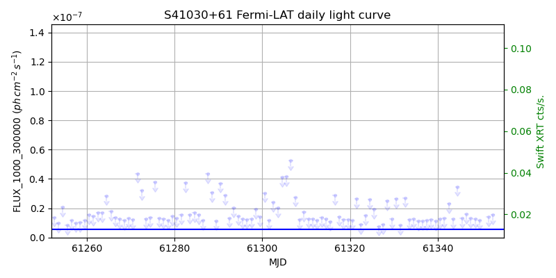
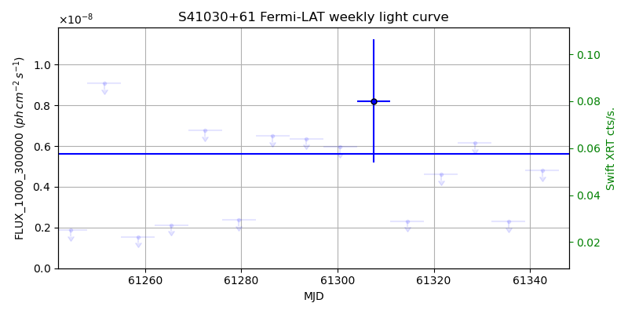

LAT Lightcurve site: https://fermi.gsfc.nasa.gov/ssc/data/access/lat/msl_lc/source/S4_1030p61
Swift site: https://www.swift.psu.edu/monitoring/source.php?source=S41030+61
NED: Query
Time of last update of this page: UT: 2026-11-06 16:22 (MJD: 61350.682)
| Property | Value |
|---|---|
| R.A. | 10:33:51.36 |
| Dec. | 60:51:07.2 |
| z | 1.408 |
| 3FGL SpectrumType | LogParabola |
| 3FGL PL Index | |
| 3FGL Flux_100_300000 | 7.06e-08 1 / (s cm2) |
| 3FGL Flux_1000_300000 | 5.62e-09 1 / (s cm2) |
| 3FGL Flux >200 GeV | 2.76e-12 1 / (s cm2) |
| 3FGL Extrap. Crab >200 GeV | 0.01 |
| 3FGL Flux After EBL Absorption >200GeV | 8.77e-15 1 / (s cm2) |
| 3FGL EBL Crab Fraction >200GeV | 0.00 |

| MJD | dMJD | Flux | dFlux | Frac3FGL | FracCrab>200GeV | EBLFracCrab>200GeV |
|---|---|---|---|---|---|---|
| 61345.50 | 0.50 | 2.39e-07 | 0.00e+00 | 0.00 | 0.00 | 0.00 |
| 61346.50 | 0.50 | 2.42e-07 | 0.00e+00 | 0.00 | 0.00 | 0.00 |
| 61347.50 | 0.50 | 1.07e-07 | 0.00e+00 | 0.00 | 0.00 | 0.00 |
| 61348.50 | 0.50 | 2.00e-07 | 0.00e+00 | 0.00 | 0.00 | 0.00 |
| 61349.50 | 0.50 | 2.13e-07 | 0.00e+00 | 0.00 | 0.00 | 0.00 |

| MJD | dMJD | Flux | dFlux | Frac3FGL | FracCrab>200GeV | EBLFracCrab>200GeV |
|---|---|---|---|---|---|---|
| 61314.50 | 3.50 | 6.99e-08 | 0.00e+00 | 0.00 | 0.00 | 0.00 |
| 61321.50 | 3.50 | 7.17e-08 | 0.00e+00 | 0.00 | 0.00 | 0.00 |
| 61328.50 | 3.50 | 5.90e-08 | 2.10e-08 | 0.84 | 0.01 | 0.00 |
| 61335.50 | 3.50 | 1.09e-07 | 0.00e+00 | 0.00 | 0.00 | 0.00 |
| 61342.50 | 3.50 | 9.93e-08 | 0.00e+00 | 0.00 | 0.00 | 0.00 |

| MJD | dMJD | Flux | dFlux | Frac3FGL | FracCrab>200GeV | EBLFracCrab>200GeV |
|---|---|---|---|---|---|---|
| 61345.50 | 0.50 | 1.32e-08 | 0.00e+00 | 0.00 | 0.00 | 0.00 |
| 61346.50 | 0.50 | 1.58e-08 | 0.00e+00 | 0.00 | 0.00 | 0.00 |
| 61347.50 | 0.50 | 1.31e-08 | 0.00e+00 | 0.00 | 0.00 | 0.00 |
| 61348.50 | 0.50 | 1.29e-08 | 0.00e+00 | 0.00 | 0.00 | 0.00 |
| 61349.50 | 0.50 | 1.18e-08 | 0.00e+00 | 0.00 | 0.00 | 0.00 |

| MJD | dMJD | Flux | dFlux | Frac3FGL | FracCrab>200GeV | EBLFracCrab>200GeV |
|---|---|---|---|---|---|---|
| 61314.50 | 3.50 | 2.31e-09 | 0.00e+00 | 0.00 | 0.00 | 0.00 |
| 61321.50 | 3.50 | 4.60e-09 | 0.00e+00 | 0.00 | 0.00 | 0.00 |
| 61328.50 | 3.50 | 6.14e-09 | 0.00e+00 | 0.00 | 0.00 | 0.00 |
| 61335.50 | 3.50 | 2.30e-09 | 0.00e+00 | 0.00 | 0.00 | 0.00 |
| 61342.50 | 3.50 | 4.82e-09 | 0.00e+00 | 0.00 | 0.00 | 0.00 |
--------------------------------------------------------- Using user-supplied coords: 10:33:51.36 60:51:07.2 2000 --------------------------------------------------------- FLWO UT night of: 2026-11-07 Local Sid. @ Midnight: 02:42 Sunset (-15.0) (local, UT): 18:39 01:39 Sunrise (-15.0) (local, UT): 05:36 12:36 Moonrise (local, UT): 05:16 12:16 Moonset (local, UT): Moon phase: 0.04 --------------------------------------------------------- AzTime LSID UT Obj_el Obj_az Mn_el Mn_az Sep. --------------------------------------------------------- 18:39 21:20 01:39 3.9 350.9 -35.5 278.9 77.7 19:09 21:50 02:09 3.1 354.5 -41.6 283.5 77.9 19:39 22:20 02:39 2.7 358.1 -47.5 288.8 78.0 20:09 22:50 03:09 2.7 1.8 -53.3 295.3 78.2 20:39 23:20 03:39 3.1 5.5 -58.7 303.4 78.4 21:09 23:50 04:09 3.9 9.1 -63.5 313.9 78.6 21:39 00:20 04:39 5.0 12.6 -67.5 328.0 78.8 22:09 00:50 05:09 6.6 15.9 -70.0 346.2 79.0 22:39 01:20 05:39 8.5 19.1 -70.5 6.9 79.3 23:09 01:51 06:09 10.7 22.0 -68.8 26.6 79.5 23:39 02:21 06:39 13.2 24.7 -65.4 42.5 79.7 00:09 02:51 07:09 16.0 27.2 -60.9 54.4 79.9 00:39 03:21 07:39 19.0 29.4 -55.8 63.5 80.1 01:09 03:51 08:09 22.2 31.2 -50.2 70.6 80.4 01:39 04:21 08:39 25.6 32.8 -44.4 76.4 80.6 02:09 04:51 09:09 29.2 34.0 -38.4 81.4 80.8 02:39 05:21 09:39 32.8 34.8 -32.4 85.8 81.0 03:09 05:51 10:09 36.4 35.1 -26.3 89.9 81.2 03:39 06:21 10:39 40.1 34.9 -20.2 93.7 81.4 04:09 06:51 11:09 43.7 34.1 -14.2 97.5 81.7 04:39 07:21 11:39 47.3 32.6 -8.1 101.2 81.9 05:09 07:52 12:09 50.6 30.3 -1.2 105.0 82.1 05:36 08:19 12:36 53.4 27.4 3.4 108.6 82.3 --------------------------------------------------------- Dark hours >55 deg.: 0.00